Hi! My name is...
Eline
Tronelle
IIM's student - First Year
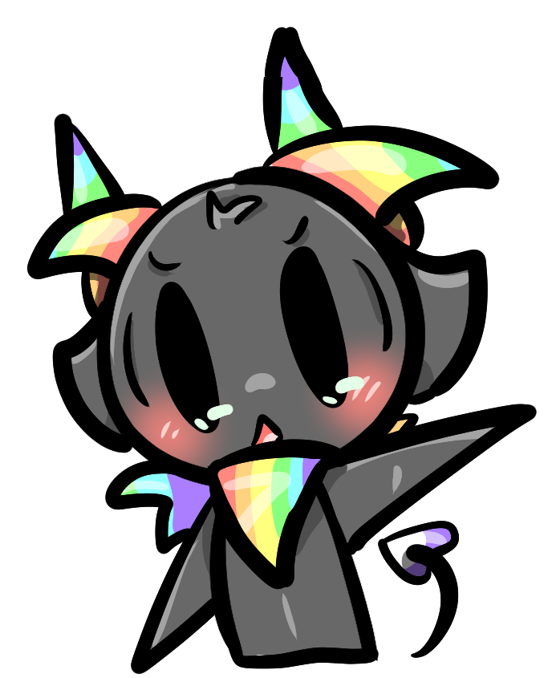
Capitain Omelet Scrambled
Hi! My name is...
IIM's student - First Year
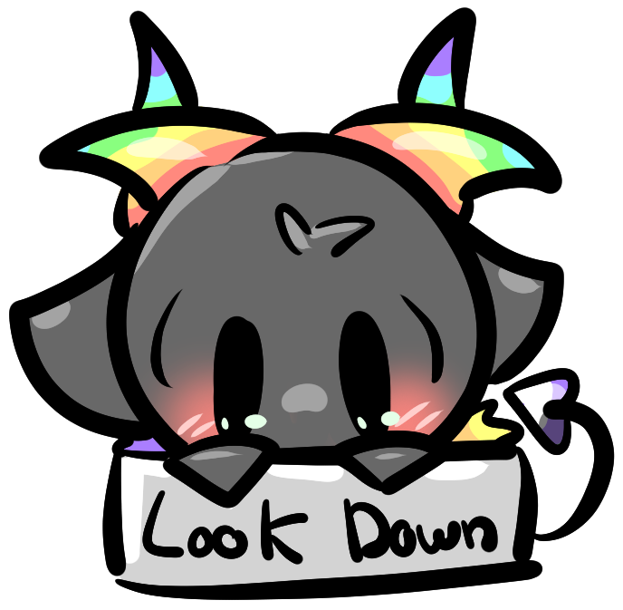
20+ Projects
16/20 Average Grade
3+ Professional Experiences
What are my skills
In this section, you'll see a panel of my different skill and capacities
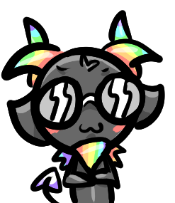
Software

SoftSkills

Artiste
Why hire me?
In this section, I will provide you with some reasons of why hire me, what's diffrent could I add in a project in addition of my skill

Creative
As a video games students, I learn how to improve my creativity with a large amount of references and skills. I draw, I play piano, I write stories, I practice sport...
With many area of interest, mixing diverts ideas together coming from large panel gives me a plus in the creativity domains!

Determined
Compared to 60% of the population! I can sleep less to work more, and BOY I will do it!! I played undertale, I know what determination means trust.
As a prove, I'm learning 'Iris out Animez arrangment' on piano, I watched the entirerity of Naruto + Naruto shipudden in 1 month, I can run for 40 minutes without giving up, Ninjago is my top 1 kid show and they say :
'A ninja NEVER quit'

Friendly
I hope lol
How does everything mensioned turn out?
A fancy way to presented to you my portfolio! Composed with divers project made in school, as well as more personal ones!


Inktober 2025
A personal project made in october 2025,
I'd followed the inktober 2025 prompt
and made one drawing each day of october!
A proove of my determination and ability to draw on digital device!
Blender Projects
Project made in school! The poulpo was made in our first ever week of blender,
the prompt said to make a LEGO meca, so I choose a poulpo!
After a little more practice with blender (one week more), we learned the basic of texturing, UV and the entire software!
Take this as a proof how fast a newbi can learn a complex software!
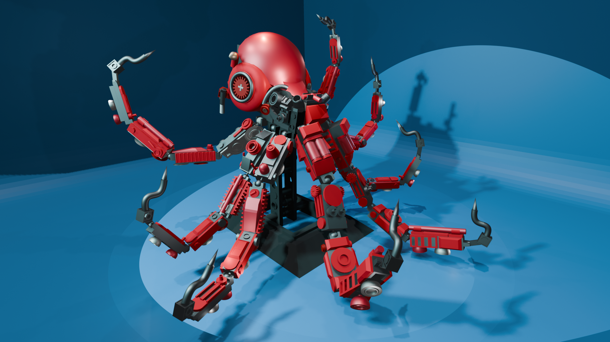
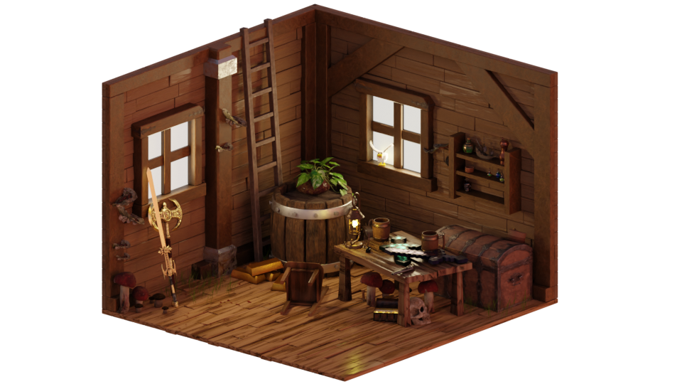
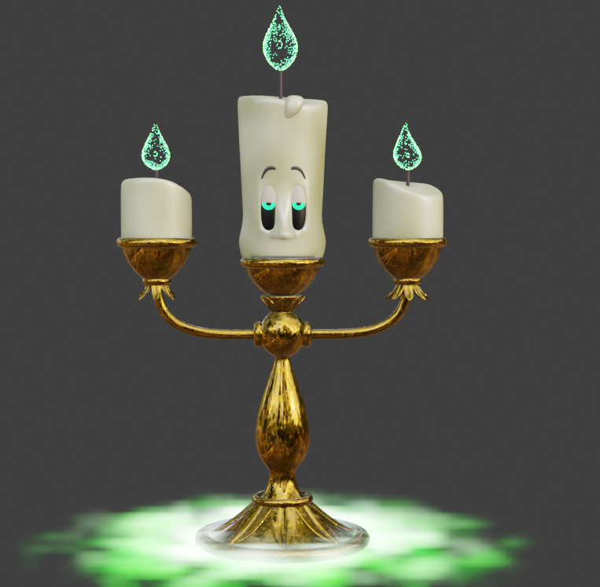
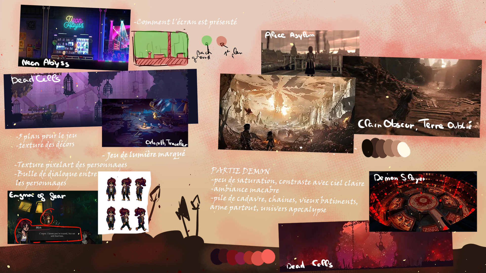
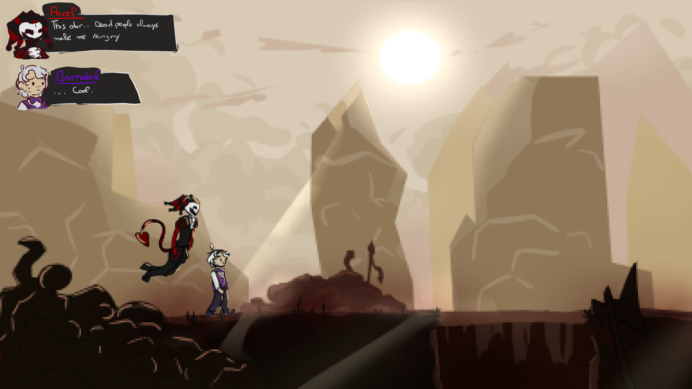
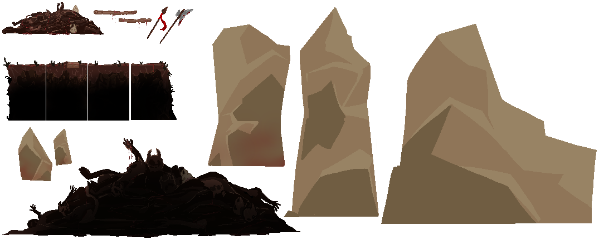
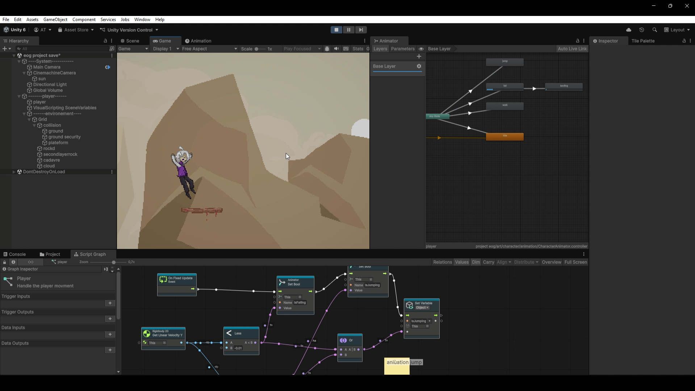
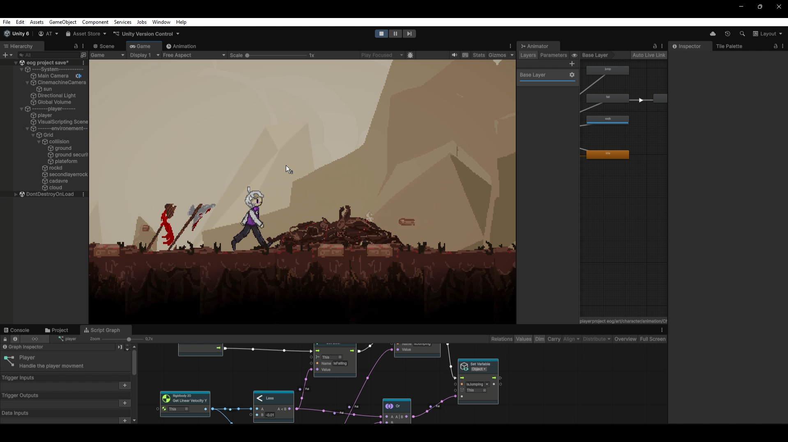
Video Games
From moodboard, to drawing asset, to unity!
My first project of video games is called ' Entry Of Gladiator'
In which you play two characters siding together despite their diffrences to save the world!
To create this game, we had to follow each step of the game developpment! See for yourself :D